Drop #47 · February 20, 2026 · 18 min read
Hey everyone (▰˘◡˘▰)
Welcome back to Drops, REINCANTAMENTO’s newsletter.
Drop #47 is our report from Berlin's CTM and transmediale. Now that the festivals’ portal has closed, it is time to look at what remains.
This year’s report is a dual effort: to capture the full spectrum of the concert program, I’ve integrated the notes of my friend and writer Lorenzo Stroppa, who followed CTM more closely than me.
A reminder: also in 2026, REINCANTAMENTO is sustained by voluntary work. If you like what we do, consider donating or getting a paid subscription to support what we do!
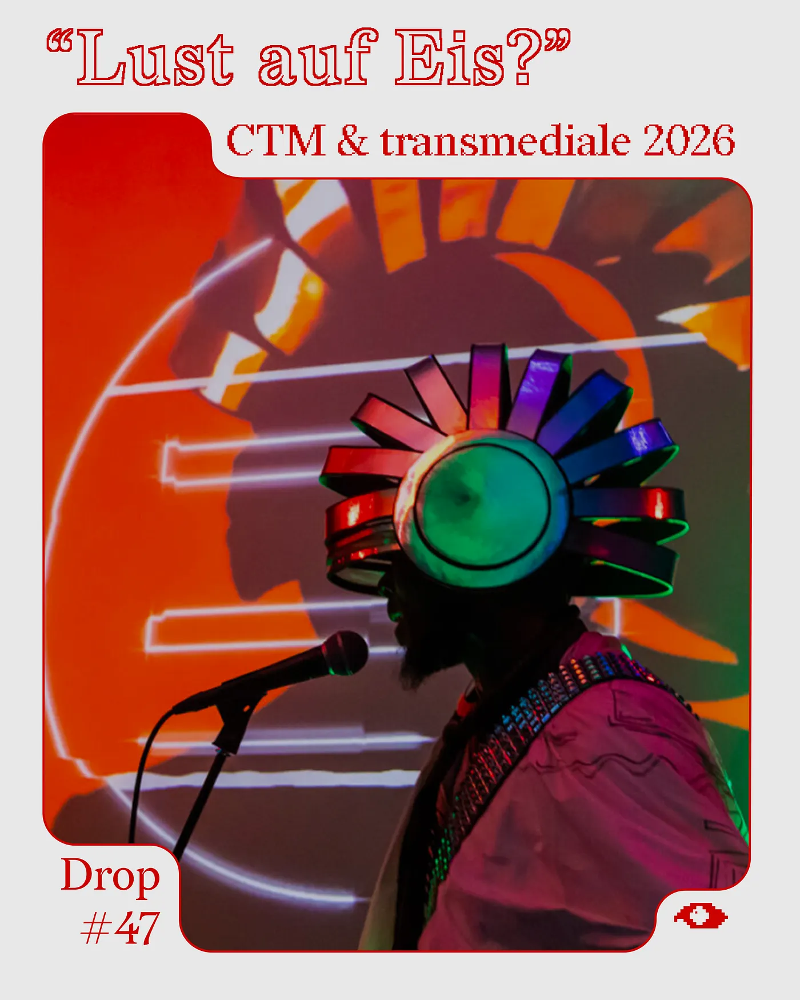
“Lust auf Eis?” (In the mood for ice cream?) asks a sign outside of a Späti in Kreuzberg while I make my way to the opening night of CTM Festival. On one of the coldest nights of a very cold winter, a pre-global warming kind of winter, walking through the neighbourhood, the offer is incongruous: too late, or too early, for the present moment.
Simultaneously, the ice cream sign calls me and connects me to other spatiotemporal coordinates, to an elsewhere where the streets are not covered in snow and the days are brighter. This minor epiphany echoes with the curatorial project of this year’s transmediale, CTM’s sister festival. Titled By the Mango Belt & Tamarind Road, parodying the Chinese Belt and Road Initiative, the festival projects an imaginative set of coordinates rooted in a tropical aesthetic. The curators, Neema Githere and Juan Pablo García Sossa, propose a baroque lexicon and a porous understanding of what technology is, stretching across latitudes and rhythms, with the hope of creating uncommon alliances and connections between systems that rarely speak.
The ice cream sign, absurd against the frozen streets, is a portal of sorts: a gate to other coordinates, but only for those in the mood to be transported.
And what about me? Am I in the mood? Between CTM’s nights and transmediale’s days, the question will stay with me for the next week.
Echoes of Tumult
Last year, I found a festival negotiating how to keep historical ruptures at bay; this year CTM, at least in its new exhibition format, welcomes a perspective on the current planetary turmoil. The exhibition “Echoes of Tumult”, spread across Kunstraum Kreuzberg/Bethanien and daadgalerie, brings together works that witness and process violence, systemic failure, and vulnerability.
The artists are in varying proximity to the realities they examine: some speak from within the wound, others from a distance that risks becoming spectacle. The curatorial gesture is honest about this tension, holding open the looming risk of the voyeuristic gaze on other people’s suffering.
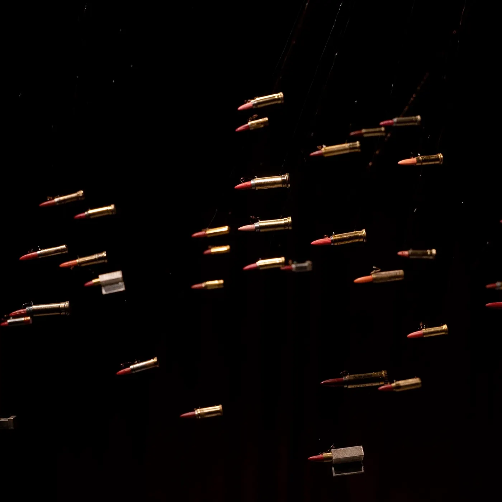
Ioana Vreme Moser’s “Arsenic Ballerinas”, my exhibition’s highlight, drifts on a different ambiguity: a swarm of vintage lipsticks, some a hundred years old, hanging like projectiles from the ceiling. During her research, Moser discovered enough heavy metals in old cosmetics to build small radio receivers; during World War II, lipstick casings were repurposed as bullet shells. The installation crackles with archival radio ads for makeup, beauty, and violence collapsed into the same frequency.
The opening weekend continues at the new (and still imperfect) location of Haus der Visionäre with the reunion concert of Earth, performing their classic drone post-rock album Hex. The mammoth repetition annoys me quickly, and the seated setup certainly does not help, but I appreciate the palpable enthusiasm in the room for what seems to be a dream come true for many long-time fans and for the festival itself.
When, a few days later, Earth refused to perform at TPO in Bologna due to the presence of a Palestinian flag on stage, I admit I felt glad I had not enjoyed them that much. I preferred the opening act by Nataša Grujović in duo with Steve Moore (himself a member of Earth), with her windswept arpeggios and the rarefied interventions of the piano. Honorable mention for the glimpse I caught of Growler’s Choir, who deliver a dream you did not know you had: an actual choir of people growling. Next level.
The following night, an electric selection of acts warms up the cold spaces of the Haus with a peak-time live show by Blawan showcasing his latest record SickElixir, Kavari’s banging assault, and the mindblowing A/V show by the Japanese duo ∈Y∋ & C.O.L.O. Despite the location’s anonymity, especially when compared to other clubbing institutions in town, the night is a successful, psychedelic jubilation of the bass-continuum.
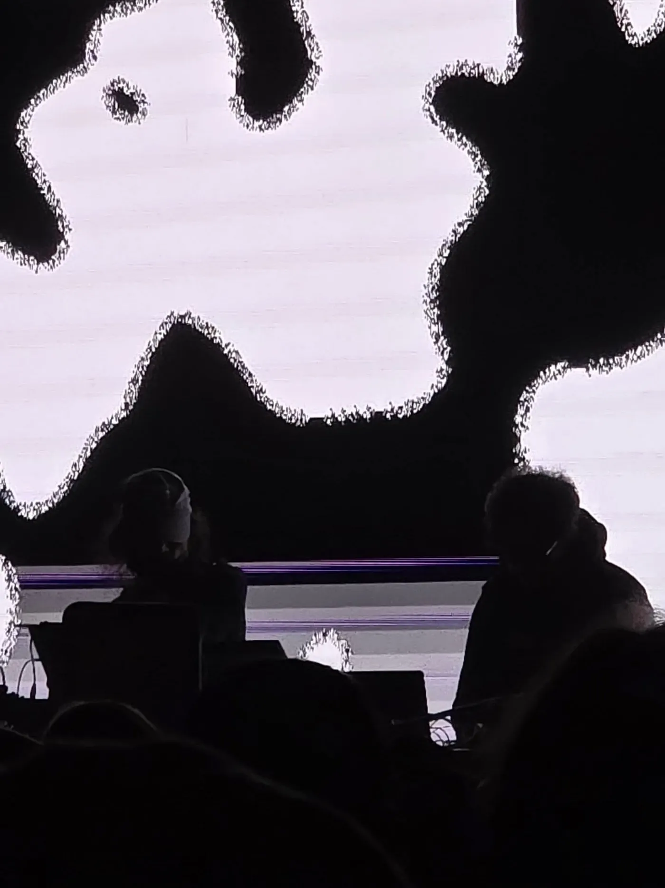
But conversations on the dancefloor are not only about how hard Blawan’s bass is kicking on the in-house spatial sound system. Friends and acquaintances are also discussing this year’s boycott initiative: the Instagram page Ravers For Palestine has called a boycott against CTM for their decision not to make a stronger pro-Palestine statement and to still use Berghain (where three nights of the festival take place), a venue also under boycott due to its multiple ties with Tel Aviv’s scene and its policy of silencing Palestinian voices. Two artists, DJ Chad and CRDR, end up dropping out of the Berghain night of 29th January, expressing their support for the initiative publicly. Others, like John Glacier, effectively withdraw from the festival but list other causes as reasons, which earns them a frankly embarrassing shaming post from Ravers for Palestine. Because apparently, boycotting a lifetime opportunity is not enough: you also need to do it exactly the way an Instagram page from New York City tells you to. I find myself genuinely uncomfortable with that post, a public shaming that doesn’t add anything meaningful to the debate.
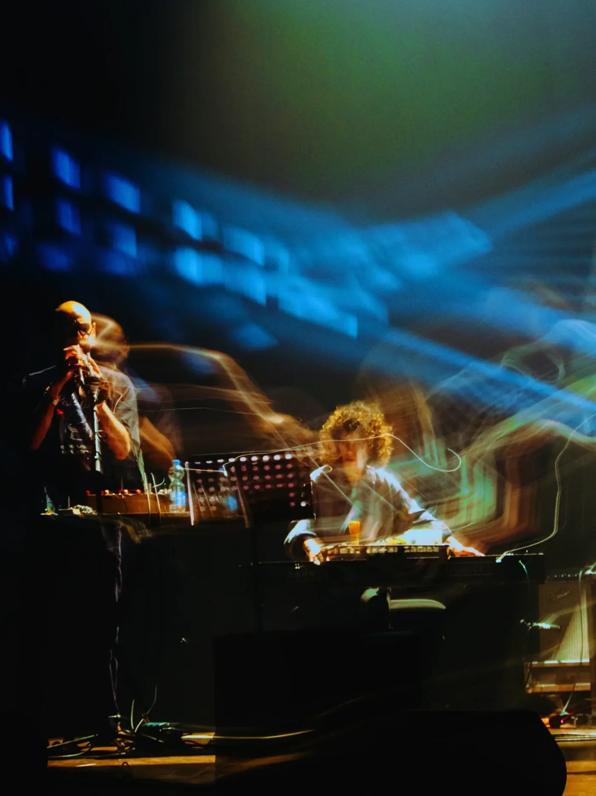
The judgment on Berghain’s pro-Zionist choices produces a shared sense of disgust, and yet I hear fewer people convinced they want to boycott the entire festival over a two-year-old post and the choice to use one specific venue. Perhaps people have been distracted and no longer think about Gaza as intensely as in the past three years, or perhaps the tactic of boycott has been absorbed too quickly into the dynamics of Insta-activism and has lost its bite.
Whatever the reason, the impact of these actions does not seem to carry the same weight as it did, for instance, two editions ago, or in a similar context, against Boiler Room. The situation raises several questions about the efficacy of such tactics when prolonged over an extended period of time and executed through hyper-accelerated communicative rhythms tied to a dynamic of public accountability and transparency. I find myself wondering what forms of activism might emerge outside of Instagram, and how, on many occasions, CTM has actually felt like a safe space for the Palestinian cause rather than the Mossad honeypot it is being portrayed as by some. I know that the dissonance of this situation was also discussed during theorist Mattin’s workshop in the second week of the festival, and that the debate continues to find footing in transmediale’s spaces as well. The echoes of tumult, as the exhibition calls it, are really here.
Dissonate <> Resonate: Notes from the Concert Programme (by Lorenzo Stoppa)
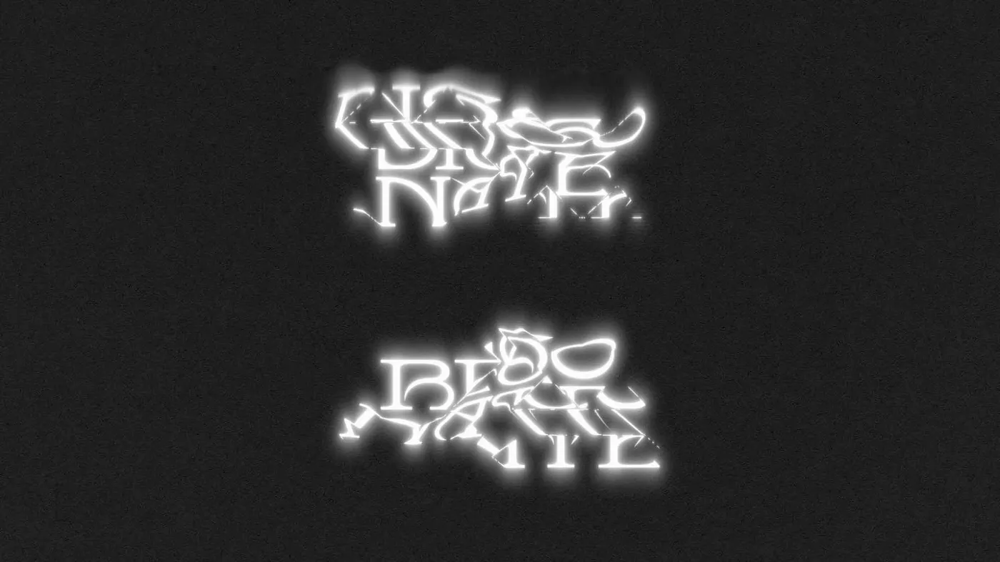
I don’t exactly consider myself a man of my time. I often eschew contemporary artistic production in favour of what many may consider a somewhat ancient attachment to traditional aesthetic forms, those parsable through immediacy and the five senses. When a friend gifted me a ticket to CTM Festival, I found an occasion to confront myself with the new finally. The festival’s title “dissonate <> resonate” hinted at a focus on the fracture of venerable assumptions of harmony and on the spatial possibilities of sound. It delivered on both.
On 24th January, I am at Radialsystem for the “Expanding from the Inside” night. Sarah Davachi, together with a film by Dicky Bahto, performs a forty-minute piece titled “Double Reeds”: a progressive movement through a beautiful, fluttering tapestry of dissonant and slightly oscillating chords, a sonic stasis that kept the trance going until an ending that arrived as a strange morendo. The performance that followed, a composition by Ellen Arkbro with the London Crumhorn Consort, worked in a similar register: heavy, blocky changes of harmonic landscape, like the operation of an old computer. Not something you get to experience every day.
The next day, once more at Radialsystem, the “Fugue Friction” night moves along Mediterranean coordinates. The concert opens with a performance by Lukas de Clerck on the aulos, an ancient Greek instrument made of two reed pipes, here reinterpreted as a hybrid with a trombone. The resulting brass instrument, with its moving slide, makes pitch control anything but easy. Melody is no longer an option, at least not in any conventional sense. Limited to harmonics and breath-controlled pitch variation, de Clerck creates an extremely tense sound based on microtonal clustering, constructive and destructive interference: a powerful, apocalyptic wail that transports you to a landscape reminiscent of a Beksiński painting.
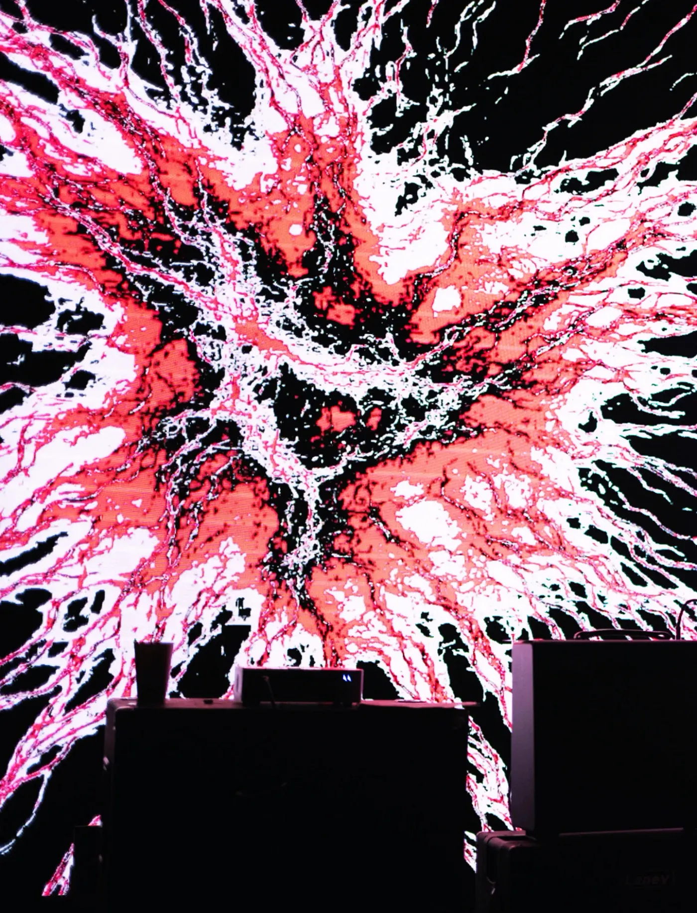
After this archeo-futuristic moment comes the NO IS Orchestra, directed by Dror Feiler: a noise ensemble composed of multiple poly-instrumentalists combining traditional instruments with disparate electronic setups. The work is unapologetically political, as the ensemble is joined by the renowned Palestinian-Syrian-Swedish poet Ghayath Almadhoun, who recites a long poem in multiple amusical intermezzos. Almadhoun addresses the archetype of European ideology and its increasingly visible failed project, laid bare in all its hypocrisy in the post-Gaza world. The echoes of tumult that CTM’s exhibition summoned invade Radialsystem. Every musical movement unleashes new attacks, seismic events, and ecological disasters against the edifice of Western thought, and such attacks progress until what is unveiled, through music and poetry, is not an edifice but just a facade.
My second weekend starts at Haus der Visionäre, where the highlight is Sote’sperformance: a combination of traditional Persian music, spoken field recordings, and electronic tapestry, which in style could almost remind someone of a slower-paced, de-noised Muslimgauze. A strangely nostalgic picture appears in between the luscious harmonies, bringing us back to wherever we often feel the need to return.
On Saturday, the event moves to the gorgeous Volksbühne. The event, called “Echoes of Disquiet”, features firstly Noémi Büchi’s Exuvie: a heavy industrial and droney synth sound, with little tidbits of hip-hop, anime, and video-game aesthetics. It accompanied a film featuring the dancer Rebeka Mondovics, who surrendered her figure and dancing skills to an on-screen decomposition and fragmentation reminiscent of a Francis Bacon painting.
What follows is one of the highlights of the festival: a performance by Daniel Brandt of his 2025 album Without Us. The performance was delivered by an ensemble of four musicians, with two on drums, one on synths, and one trombonist. What made the performance extraordinary was its interweaving with the short film of the same name, directed by Anthony Dickenson: a meditation on the helplessness of the individual in the face of the climate crisis and the apparent need to take radical action. The film follows an Uber driver who moonlights as a masked eco-terrorist livestreamer, her life intertwining with a young girl she befriends during her shifts. The musical performance overlapped the film in perfect synergy, story flowing into sound and sound preparing the viewer for what comes next, a mastery of audiovisual composition that left me sincerely awestruck.
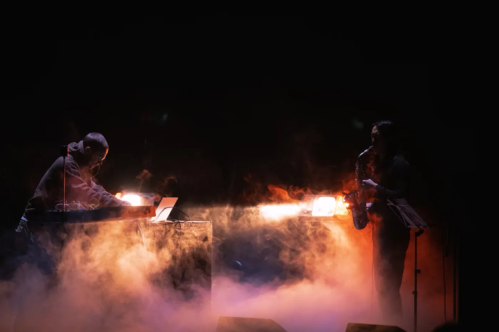
At the end of my CTM experience, I am amazed by the wide variety of the musical palette offered. The topic of resonance was explored through extremely peculiar sonorities, compositional styles, ensembles, and performance spaces, whereas that of dissonance was felt not only in the music but in what such music was meant to convey. The political undertone produced something that felt genuinely necessary: not art for art’s sake, but art as a way of inhabiting the present without capitulating to it.
Under the Kuppel
Before a single work is viewed, transmediale 2026 asserts itself through the architecture of Silent Green. The former crematorium in Wedding is a subterranean labyrinth of narrow corridors, hidden niches, and vaulted halls. By activating these unconventional corners, the festival re-defines the sober functionalism that usually defines the space.
At the building’s heart sits the iconic Kuppelhalle, now transformed by Kidus Hailesilassie’s large-scale installation, “6,500 Alphabets Make a Map”. This living atlas of twenty indigenous African knowledge systems hovers above the festival’s primary forum, signaling a shift away from standard computational logic toward ancestral wisdom. The space itself abandons the rigid hierarchy of the stage; instead, conversations at the Kuppelhalle unfold in a series of concentric circles, where speakers are at the same level as listeners, often perched on comfortable armchairs or, more often, seated on the floor.
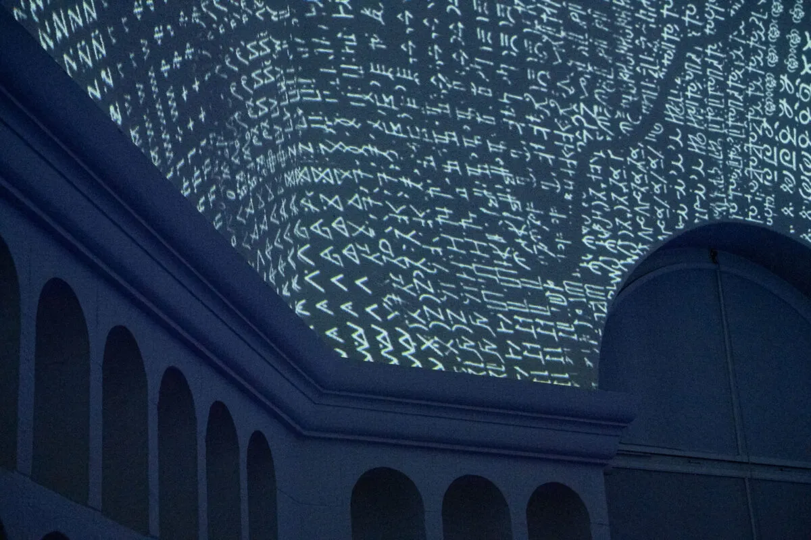
Linking the Kuppelhalle to the Betonhalle is the transmediale studio, a transitional wing reimagined as a ‘decompression zone.’ Here, the festival’s trademark hammocks (re-titled Hanging·Structures) sit alongside charpai, traditional woven beds from the Indian subcontinent, inviting visitors to pause. The rest of the studio is activated by sculptural interventions like Kathleen Bomani’s “Deera World”, a vending apparatus that dispenses deeras, the flowing garments of the Swahili coast. By placing a garment traditionally rooted in gift economies and femme solidarity into a mechanized system, Bomani both mirrors and subverts commercial logic. Upstairs, Johnson & Jeison’s “Herencia Dividida 💧 gota fría edition 💧” brings high-octane energy to the wing; this Stepmania mod fuses early 2000s dance-machine nostalgia with contemporary Tropical club culture, resulting in matches that are as exhausting as they are hilarious to witness.
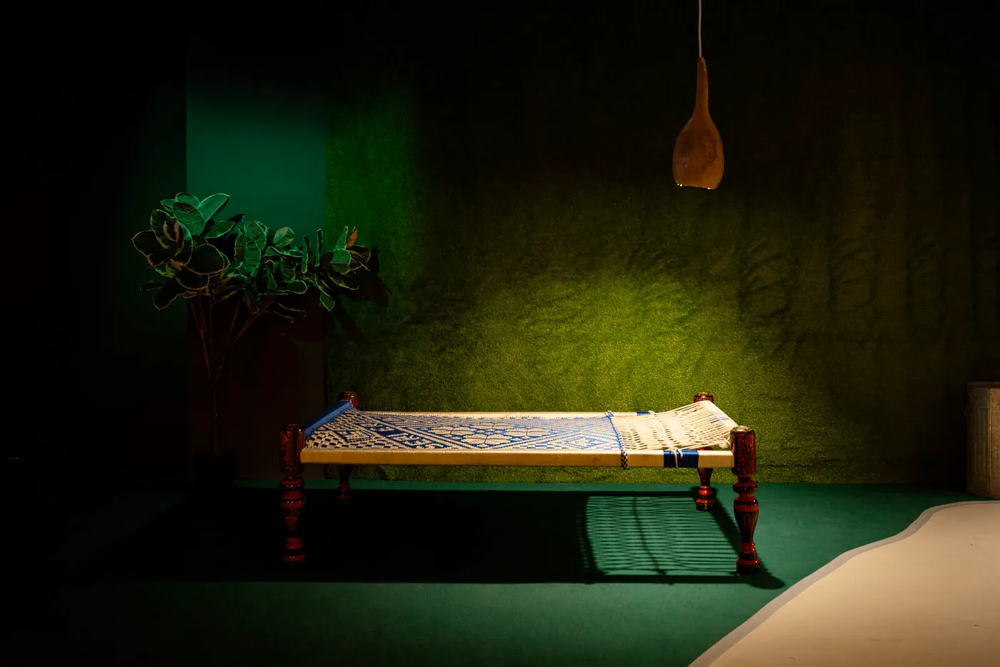
This curatorial direction expands beyond Silent Green as well. At CANK, transmediale’s new location in Neukölln, Guely Morató Loredo’s “Rare Earths”, proposes an edible sculpture made of salt and sugar. The installation invites visitors to eat a portion of it, or take with them as much salt or sugar as they wish. The work evokes the Andean landscape of the Lithium Triangle, an ecosystem stretching across Argentina, Bolivia, and Chile: a territory historically exploited for silver, copper, gold, and zinc, and rich in lithium reserves. In front of Loredo’s work, visitors can keep up the habit of devouring the planet as we already do as the human species. However, while Loredo’s work stands out, most installations at CANK feel underserved by their context; the dim lighting clings too closely to the building’s former life as an abandoned shopping center, leaving the works feeling too close to the ‘abandoned retail’ gloom of the space.
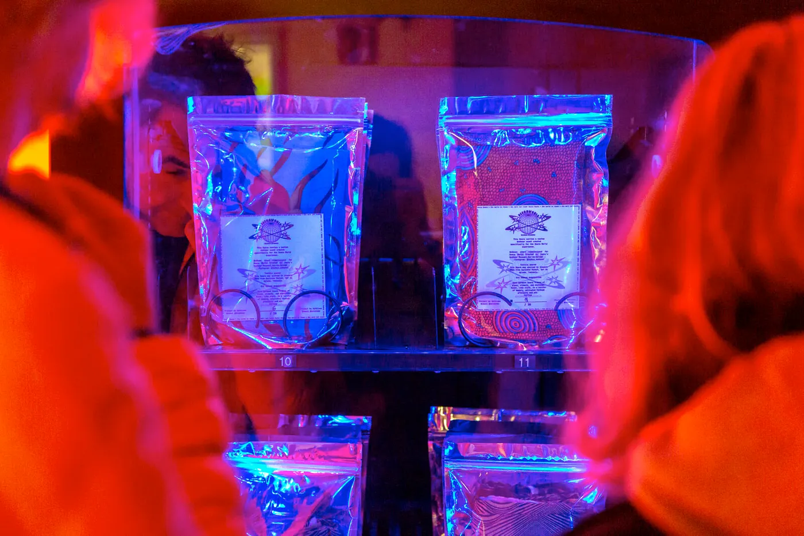
A further intervention stretches to the Dong Xuan Center in Lichtenberg. Germany’s largest Asian wholesale market, the Center is a series of industrial halls that host more than 400 small businesses from Vietnam, China, India, Pakistan, and other countries. The curatorial intervention consists of an LED text that displays the Ben Okri quote that serves as one of the compassing elements for the festival:
“In the beginning there was a river. The river became a road and the road branched out to the whole world. And because the road was once a river it was always hungry.“
It is an interesting gesture, grounding the festival’s tropical coordinates in the actual circulations of goods and people that traverse Berlin. At the same time, it is hard to imagine many festival-goers making the trip to Lichtenberg to see it (I didn’t), which makes the intervention feel stranded between ambition and reach.
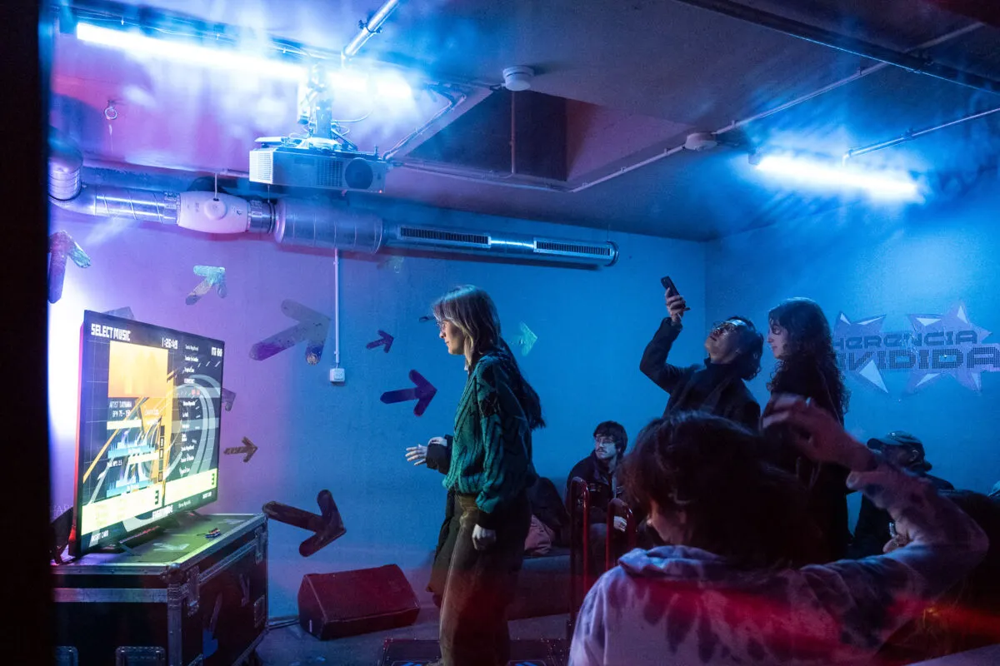
The two festivals converge on Thursday night at Berghain for a 8-hours night spanning across the three flors of the location.
On the main floor, I catch the metal band King Yosef delivering a monumental live —a lesson in brutalist simplicity where the sound, the lights, and the scenographic impact converge into a raw physical reckoning. At Säule - the stage co-curated with transmediale - the night evolves around the different styles of the global club sound: from Dengue Dengue Dengue’s slick take on techno and cumbia, to DJ Love’s joyous budots mess and Miss Tacacá’s relentless funk assault. After dancing to Guedra Guedra and his arid, desert-dusted electronics at Panorama Bar, I manage to catch the closing set of Marylou b2b Fukinsei at Berghain: two of the most appreciated DJs and organisers in the city's scene weaving a bass-infused, rampant journey that ends in a deep nod to Mediterranean roots.
High Tide
The festival’s intellectual backbone—the High Tide programme of lectures and workshops—operates in a different temporal register. This year, the shift to ‘planetarise’ the discourse feels remarkably successful. By moving away from the usual suspects of the Western new media circuit, the festival offers a genuine plurality of knowledge systems.
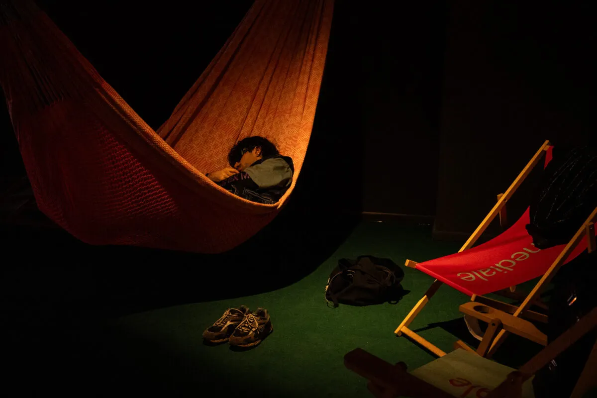
Among this multiplicity, several interventions stayed with me. Lucas LaRochelle’s talk on dissociative world-making traces a coherent detour around ketamine, transitioning, and data politics.
self.service studio hosts a talk with Cade Diehm (New Design Congress) and a mesh infrastructure workshop with Christopher Dake-Outhet, Eren İleri, and Sarah Grant, offering a much-needed hands-on counterpoint to the more discursive programme and grounding questions of digital sovereignty in material practice.
This focus on materiality continues in Su Yu Hsin’s screening, a welcome opportunity to sit with her years-long research into the global semiconductor trail, stretching from Taiwan and Arizona to the Elbe River valley. Jazmin Jones and Olivia M. Ross embark on a different kind of real-world quest in Seeking Mavis Beacon. Traversing the United States online and offline to find ‘the most recognizable woman in technology,’ the duo delivers one of the festival’s most compelling screenings—a hunt for a digital ghost that feels both urgent and deeply personal.
The philosophical weight of the festival culminates in Prof. Manthia Diawara’s lecture on Glissant and his film African Intelligence. Mapping the ecstatic rituals of the Lebou tradition in Senegal, the work offers a profound resonance, even if the framing occasionally relies on a too-neat binary between Western rationalism and indigenous spirituality. Despite this, several provocations from the session are indelible: the power of opacity as the ultimate guarantee of diversity; the structure of a ceremony not as a hollow repetition of the known, but as an active inquiry into the possible; and the initiated as privileged readers of signs, possessing a privileged semiotic access.
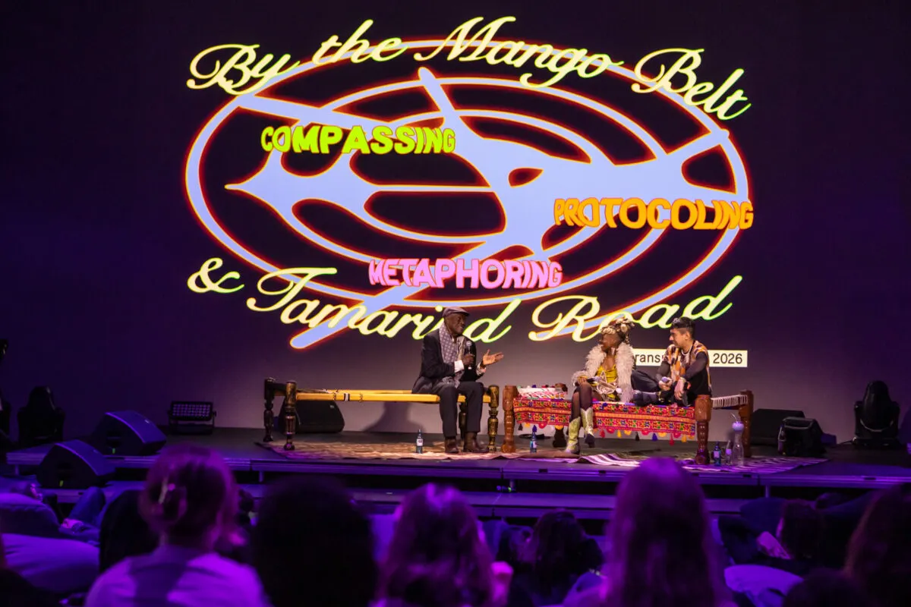
The Coca Assembly with Laura Huertas Millán is perhaps the most spatially inventive session, combining a relational architecture with a film on the pharmacopolitics of the coca leaf. Coca emerges as an ancestral technology of connection: a technology of thought and knowing, a nous-technology. For the indigenous communities of Colombia, Peru, and Bolivia, the plant is embedded in the mega-biodiversity of the forest, growing alongside tobacco, sugar, plantain, and cacao. It is food for the spirit, a vehicle for communal bonding and corporeal learning. One observation from the assembly lingers: coca has the capacity to hold worlds together, but these are conglomerates and assemblages, not friendships in the proper sense.
Finally, though somewhat disorienting in its structure, Chia Amisola‘s performative talk “Every Love Song in the World” opens a floodgate of research directions, with an exquisite aesthetic drenched in internet-kitsch and karaoke-glam.
Coda
At times, however, the conversations suffer from a lack of mediation, drifting into the indeterminate. The curatorial statement invokes Ursula K. Le Guin’s provocation that ‘technology is the active human interface with the material world,’ a definition so broad that nearly everything—coca, fermentation, ceremony, weaving—qualifies. The risk here is what Hegel called ‘the night in which all cows are black’: when a concept expands to encompass everything, it ceases to distinguish anything, and each connection, however suggestive, floats without friction.
The planetary ambition of this edition is real, and the voices it assembles are remarkable, genuinely shifting the ‘who’ and ‘where’ of the discourse. Yet, a lingering feeling remains: broadening the festival’s net cannot be the only response to the unprecedented historical moment we inhabit. In my report on last year’s edition, I noted that ‘there is no more ordinary’: a phrase that sounds almost like an understatement if one pauses to consider what has happened in the past 365 days.
While we sat in the Kuppelhalle following transmediale's conversations, the internet was going wild over Moltbook, a forum where AI agents (or humans impersonating them) talk to each other, demonstrating language's capacity, once modelled as a vector space, to interact with itself without human involvement. This is not the place to unpack that phenomenon, but it stands as one example among many of the sheer scale and urgency of what is unfolding. Institutions like transmediale, which for decades have served as crucial spaces for thinking critically about digital culture, seem to struggle today to maintain a relevance that goes beyond the institutional: not merely about gathering the right people in the right room, but about producing the kind of sharp, situated analysis that the present demands, and figuring out how that analysis might inform new modes of agency.
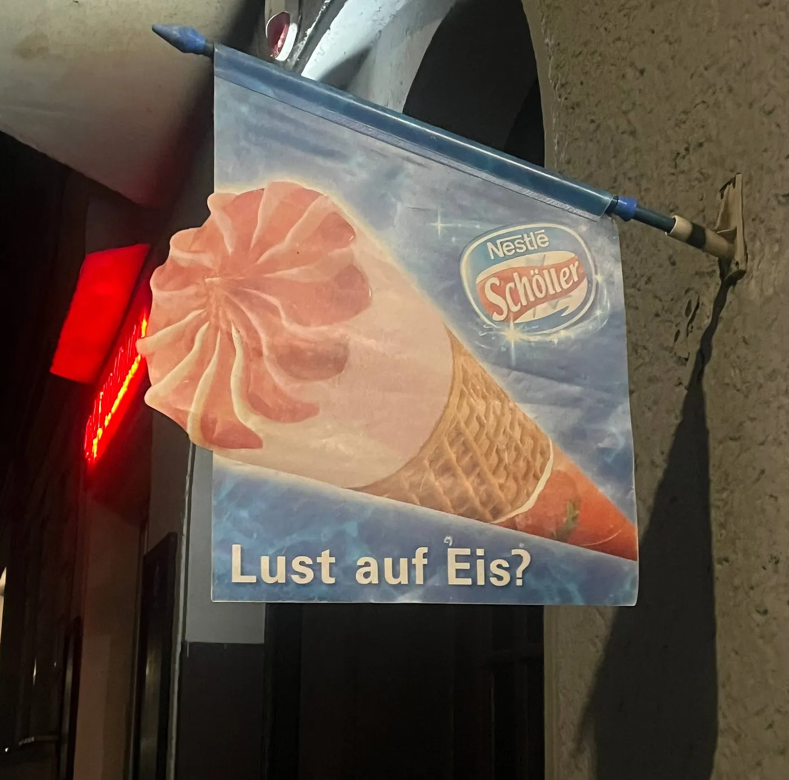
These questions remain unanswered. But one more still haunts me.
Am I, after all, in the mood for ice cream? That Späti sign, absurd and misplaced, keeps pulling me back: the promise of being elsewhere, of following coordinates that don’t match the immediate perception of my surroundings. transmediale 2026, at its most potent, does exactly this: it transports us, re-mapping the room, and patching our exhausted imaginary. But the impression that lingers, a few days later, is that these trajectories tend to remain afloat, suggestive but somehow weightless.
And in a winter that only seems to get colder, being transported is not enough. At some point you have to return to the frozen street where you were standing, the snow under your feet and the wind in your face. Whatever I learned on the other side, I need to figure out how to use it here.